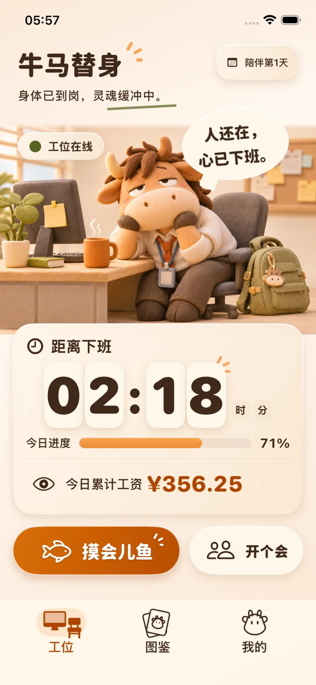

09:00 / 上工
身体已到岗。
离下班还有多久，阿牛陪你数。
给每一位努力下班的人
领养一只电子牛马。
你在工位过日子，阿牛替你演出上班的心声。
一起摸会儿鱼，再一起准点下班。
iPhone 版即将见面 · iOS 17 及以上
人还在，
心已下班。
点一点，看看阿牛的精神状态。数字均为演示。
MEET YOUR WORK BUDDY / 认识阿牛
它会托腮发呆，会开会点头，
也会在下班那一刻，比谁都积极。
给平平无奇的工作日，加一点陪伴。
离下班还有多久，阿牛陪你数。
选个休息时长，给自己喘口气。
手动开个会，记下这段时间。
收好今天的小票，去过自己的生活。
阿牛的状态由你的日程与手动操作决定，不监控你的工作，也不替你真实出勤。
SMALL JOYS, EVERY WORKDAY / 打工日常
把下班倒计时摆在眼前，
看看今天走过的时间，攒下的工资。
每一小格进度，都离生活近了一点。
按你的上下班和午休时间，安排自己的节奏。
5、10、15 分钟或自由计时，提醒由你决定。
换件衣服、戴上耳机。陪伴会解锁更多装扮。
薪资可以跳过。金额按填写的规则估算，不作为工资或考勤凭证。
摸鱼和会议金额已包含在当日工资中，不重复累加。

辛苦啦，接下来的时间属于你。
WORK IS DONE. LIFE IS ON.CLOCK OUT, TAKE A RECEIPT / 收工仪式
下班不是一个冷冰冰的时间点。
是阿牛背起书包，也是给自己一张小票。
暖心、嘴硬，还是发个小疯？今天你说了算。
分享默认隐藏工资。高级小票可免费预览，导出需 Pro。
这里展示的是模板示意，不会生成你的真实记录。
JUST BETWEEN YOU & ANIU / 你和阿牛之间
无需注册，昵称、排班、薪资和打工记录保存在本机。
没有广告或统计 SDK。锁屏、分享和应用内金额分别控制。
A LITTLE EXTRA / 多一点表达
计时、计薪、休息、日记录、基础装扮与暖心小票，
都可以免费使用。
Pro 留给想多看一眼这一周、多表达一点心情的你。
周汇总卡片与七日工时图表
“嘴硬”“发疯”小票的保存与分享
三种方案权益相同。具体价格、币种与周期以应用内 Apple 购买确认页为准。月度和年度自动续订，可在 Apple 账户取消。
阿牛是陪你度过工作日的电子伙伴，会随日程与手动操作切换状态。它不能代替真实出勤、完成工作或操作其他应用。下班倒计时和小票，是给自己的小小仪式。
当然可以。跳过薪资设置，仍能使用阿牛、下班倒计时、休息计时和日记录。填写薪资后显示的金额是按你的规则估算，不等于实际应发工资。
应用没有公司端或自动上报功能，业务记录保存在你的手机里。只有你主动选择分享目标时，小票才会交给所选应用。系统备份受你的设备设置影响，详情见隐私政策。
基础计时计薪、活动、日记录、暖心小票、基础衣橱和现有系统组件免费。Pro 增加周汇总、七日工时图表，以及“嘴硬”“发疯”小票的保存和分享。高级模板可免费预览。
应用没有自建云同步，记录迁移取决于你使用的系统备份或设备迁移方式。Pro 可用原购买 Apple 账户，在应用会员页尝试“恢复购买”。重置应用数据不会取消 Apple 订阅。
面向 iPhone，最低 iOS 17。系统组件与实时活动的可用性受设备和系统限制。iPhone 版正在准备与你见面，正式开放下载后会在本页更新入口。